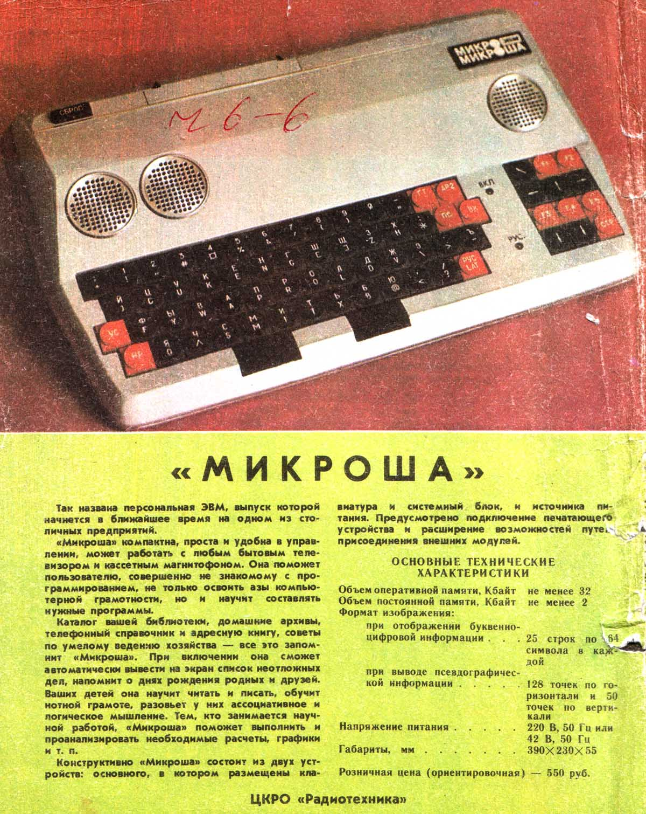
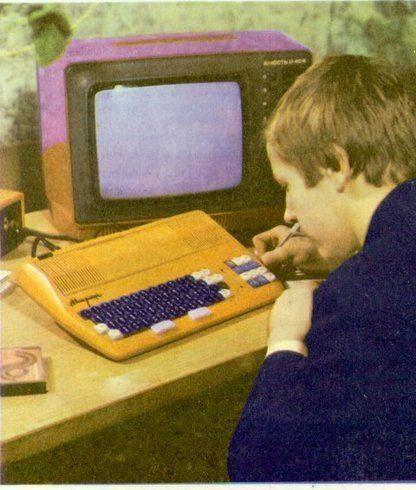
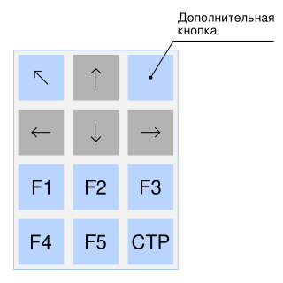

Вот как выглядели первые варианты компьютера "Микроша":

Отличительная особенность в том, что нет решетки охлаждения на всю ширину корпуса. Для охлаждения сделаны металлические круглые решетки, вмонтированные в верхнюю панель. Две левые решетки - это просто решетки охлаждения, а правая решетка - это и решетка охлаждения, и отверстие за которым скрыт звуковой динамик.
В последствие от такого дизайна отказались, и сделали цельную решетку охлаждения из самого пластика верхней панели, и перенесли шилдик с названием. Причем пластиковые решетки были только в левой и правой четверти ширины компьютера, а в центре решетки небыло.

Однако на этом изменения не были закончены. Следующий вариант Микроши выпускался вплоть до прекращения производства:

Хотя, еали быть точным до конца, окончательный вариант дизайна был без верхнего светодиода - индикатора питания.
Здесь вместо каллиграфического шилдика с названием компьютера сделана более оквадраченная надпись. Белые клавиши исчезли, и стали красно-черными. Возможно, была перенесена клавиша РУС/ЛАТ с нижнего ряда на второй снизу.
Так же можно разглядеть, что на дополнительном блоке клавиш клавиша "Вниз" ранее не была двойной, а на ее месте были две отдельные клавиши. С какой целью сделали объединенной клавишу "Вниз" не совсем понятно. Возможно из-за того, что при трех кнопках "Влево" - "Вверх" - "Вправо" на одном уровне, рука пользователя накрывала кнопку "Вниз", и ее сложно было нажимать. Размещать кнопку "Вниз" только в первом столбце нижнего ряда, чтоб ее нажимать большим пальцем, было бы нелогично. А в среднем столбце нижнего ряда она была бы максимально сложно нажимаемой. Видимо поэтому решили сделать спаренную кнопку. Хотя по моему мнению, лучше бы сделали более классическое расположение курсорных кнопок, это было бы и удобнее, и заодно дополнительная кнопка бы появилась:

Вот если б такая клавиатура была, да еще и с герконовыми клавишами (а не с металлическими подпружиненными контактами), пользоваться компьютером было бы намного легче.